1
Create Dashboard from single prompt
Adaptable to various industries for Inventory Risk Management use case
The Prompt Library brings reusable AI prompts into one place, supporting research, product thinking, design workflow, and dashboard creation. It helps teams start with structured instructions and adapt them to their project.
I researched inventory management, vibe coding, and prompting practices. I designed the dashboard, then translated its structure and interactions into prompts adaptable across industries.
Vibe coding makes it easy to bring ideas to life, but getting consistent outcomes remains a challenge.
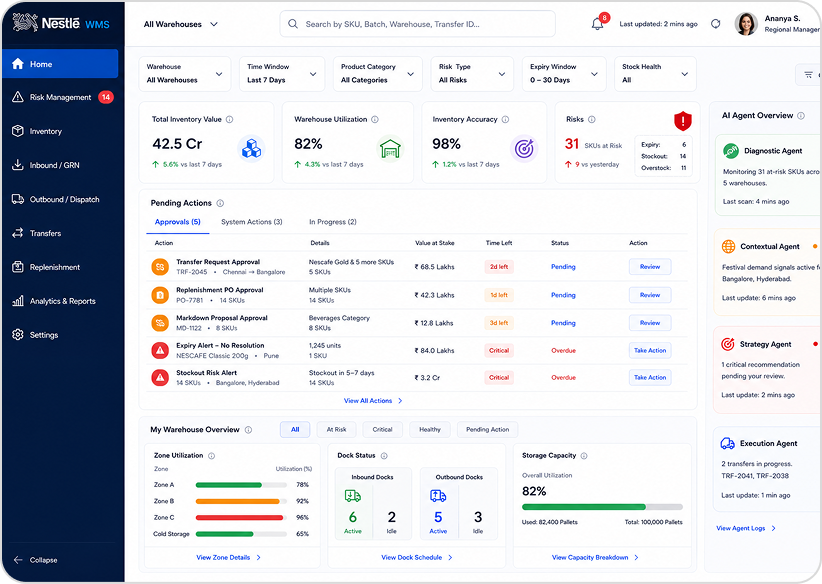
Just names the screen. Leaves its purpose, hierarchy, and behaviour open to interpretation.
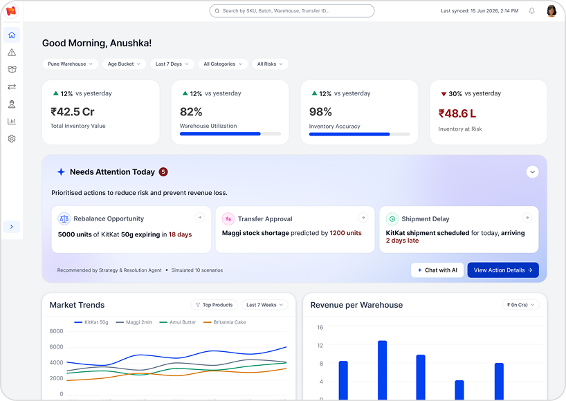
Defines the user, business context, interface, expected interactions. Gave AI a clear brief to follow.
I explored prompting frameworks, existing libraries, and practices for AI-assisted interface creation to understand how to make instructions clearer and reusable.
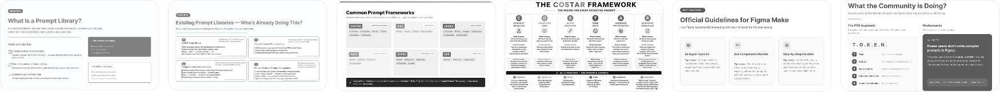
It helps teams use prompts effectively across research, product thinking, workflow design, and dashboard creation.
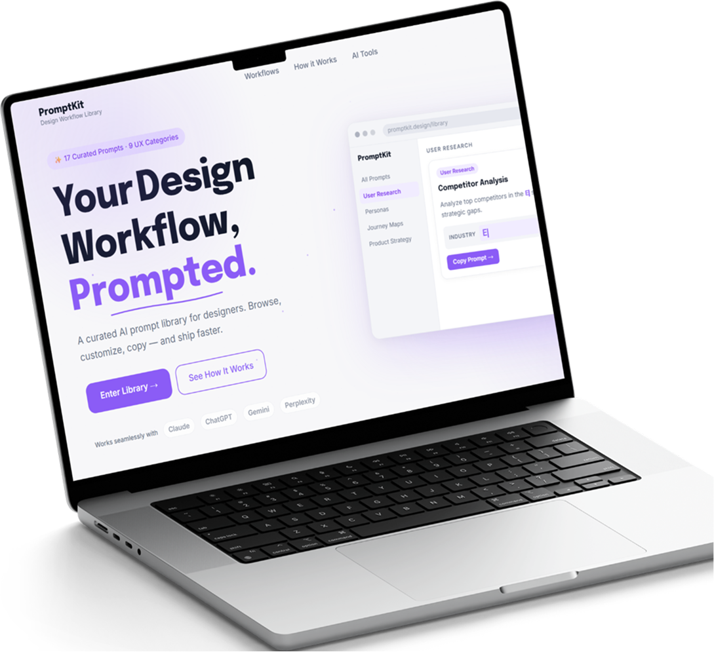
Pick → Customise → Copy
Adaptable to various industries for Inventory Risk Management use case
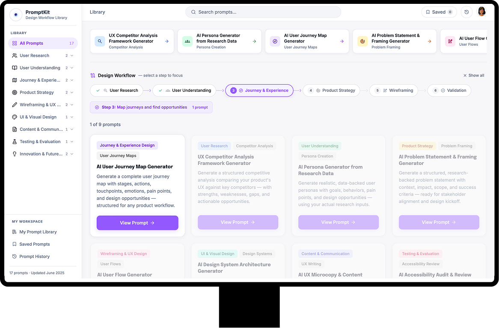
Prompts for each step of the process
Available as per AI tool and tokens
A collection of your saved prompts
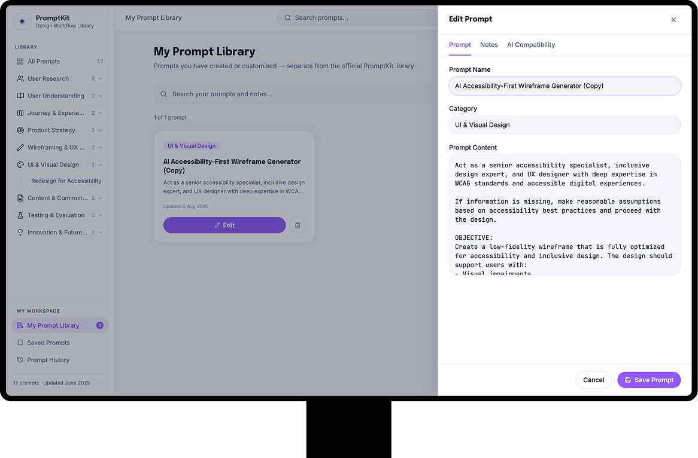
Edit and add notes according to need
I started with inventory management research and used those insights to design the dashboard. Then turned the design into reusable prompts.
Final UI screens made on Figma Design
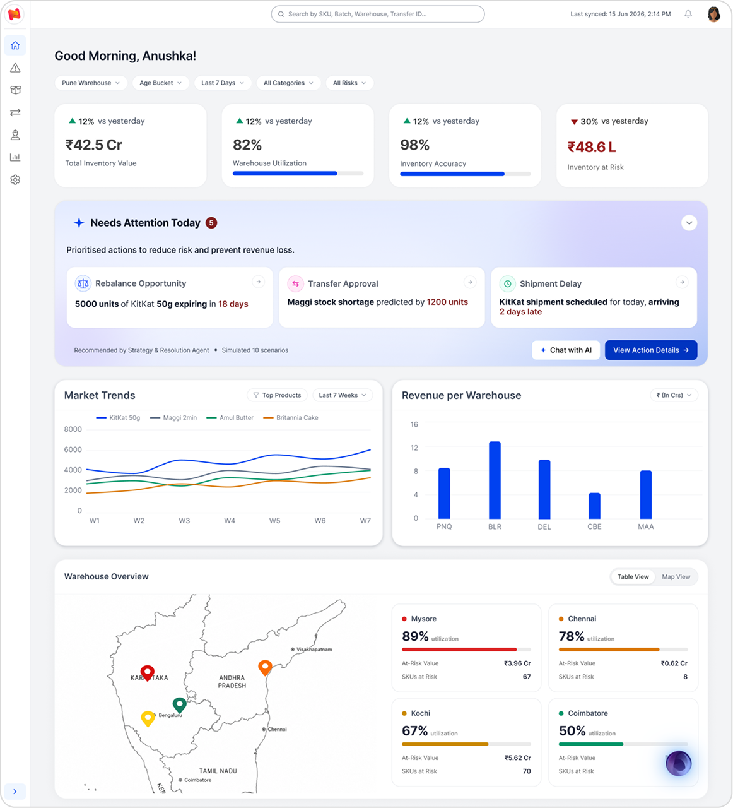
Design decisions
Needs Attention AI recommendation shows multiple issues with similar urgency highlighted.
AI powered dashboard that aids in decision making (chat window access).
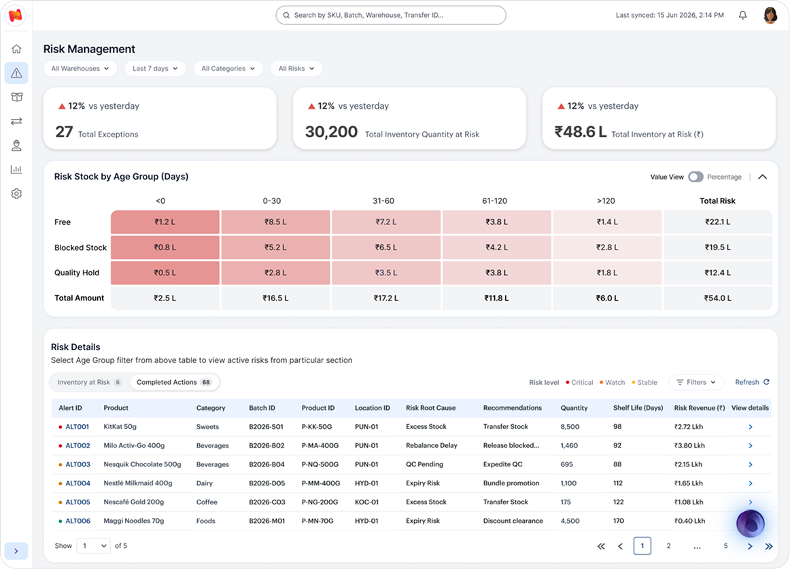
Age-bucket filtering narrows the table to the stock users want to investigate.
Pending and completed action tabs support warehouse decisions.
Pagination breaks large inventory lists into smaller sets.
Risk indicators make urgent items easier to spot.
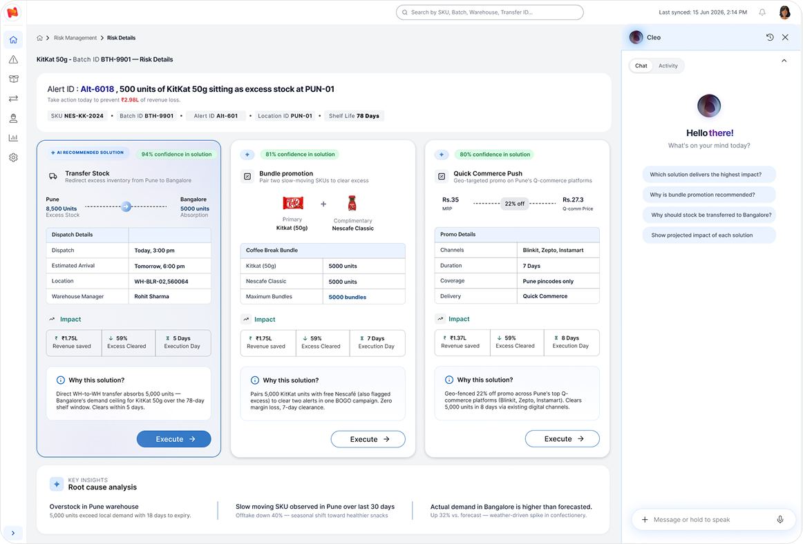
Recommended option highlighted based on AI predictions.
Confidence score to support informed review.
Reasoning for each solution to provide more context if needed.
Chat and activity tabs in AI window to maintain transparency of AI actions.
A shared design foundation, with industry-specific context.
Defines page layout, visual hierarchy, components, styling, and interactions.
Contains the list of variables that need to be changed according to chosen industry.
Contains values of the variables for each industry, retail, health and pharma.
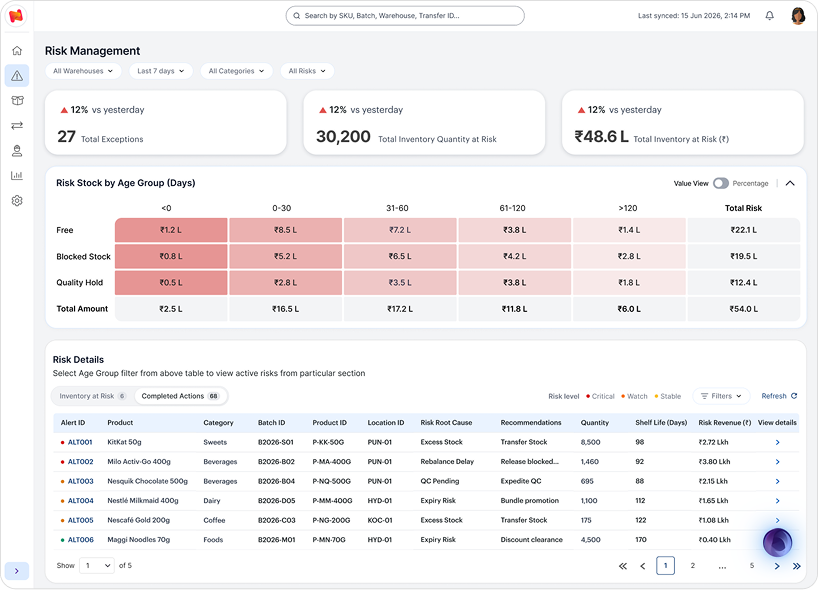
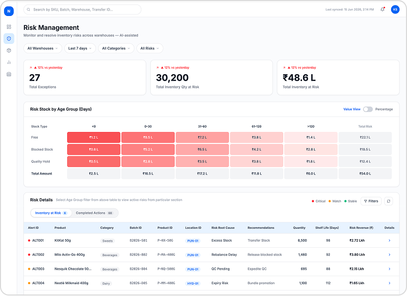
During this project, I found that moving beyond Figma Make’s default visual style took considerable iteration. Creating a clear wireframe in Figma Design first was often quicker, while AI helped turn it into an interactive prototype to explore and refine.
Adding a section in the prompt library to show expected output would improve adoption.
Feel free to reach out if you have any questions. For now, please consider checking my other work.